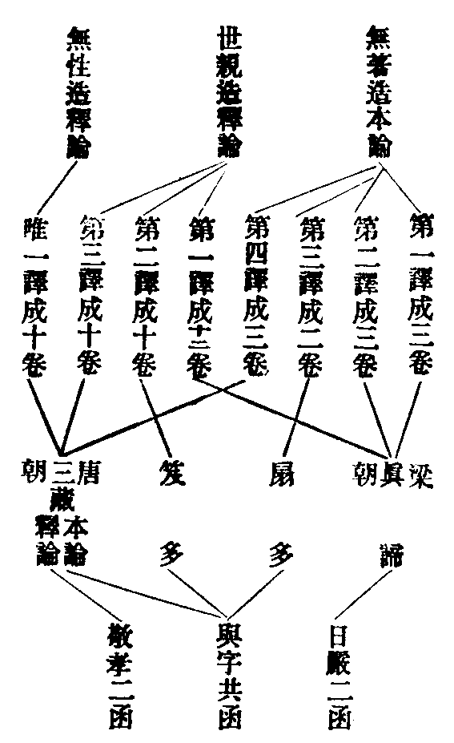

卍新纂大日本續藏經 第59冊
No.1109 終南家業 (3卷)
【宋 守一述 行枝編】
第 1 卷
終南家業目錄
No. 1109
終南家業卷第一
教觀撮要
吾祖弘律。以妙觀為本。蓋準律中。佛制比丘。觀念對治。方能入道。故曰。常爾一心。念除諸蓋。違則結犯。但律中。觀念皆屬權少。祖師克究佛懷。深符開會。直依攝大乘論(皈敬儀引)知塵無所有(空觀)。通達真(真諦)。知唯識有。(假觀)通達俗(俗諦)。若不達俗。無以通真。若不通真。無以遣俗。以俗無別體等義(上顯真俗相即為空諦。空假不二為中觀)。立中道妙觀。為出家學本。於事鈔沙彌篇及業疏受戒篇並云。觀事是心等。言事即總十界。依正色心等法。蓋是。唯心本具。全心變現。事即俗諦。心即真諦。心事不即不離。即中諦。如此觀事。豈思議哉。使自沙彌。便開妙解。達事是理。全性成修。凡所進用。俱成妙行。又於鈔疏懺六聚篇。乃云。諸法外塵本無。實唯有識。此理深妙等。上句真諦。下句俗諦。俗不離真。真不離俗。不即不離。即是中諦(在所為三諦。在能為三觀)。三諦之法。微妙圓融。故云深妙。會上兩文。其義即一。是則一心即三諦。三諦即一心。若以一心為能觀。則三諦並屬能觀。為之一心三觀圓融妙觀。若以一心為所觀。則三諦並屬所觀。為之一心三諦圓融妙境。境觀俱明。能所互照。無能所中。能所歷然。無差別中。差別宛爾。復於歸敬儀中。能敬無非三業。所敬莫過三寶。於篇篇事事之下。令理事圓融。真俗並運(上明觀訖)。立觀既妙。在教必圓。此宗云。教無非律乘。若據教限。律是偏少。究佛本懷。諸有所作。常為一事。百千方便。曲功調停。皆佛權謀。隨他意語。至終法華。方暢本懷。開決偏小。即一佛乘。涅槃扶談。終顯佛性。自昔傳律。全昧歸源。唯我南山高懷卓朗。判釋教門。空有無濫。別凖二經。開扶妙旨。直顯戒律。即是圓乘。點顯境緣。及受隨行。皆即一心。無非唯識。唯心教行。豈不圓妙。今更略引諸文。使學者知其教也(下引戒法處。即指於教也)。如事鈔指戒法云。法界塵沙。二諦等法。法界乃戒法之體。塵沙乃戒法之數。若以法界為境。應須了境。即是二諦。三諦之法。非界言界。故云法界。當知戒法。乃於法界理上。假名建立。故有差別。數等空塵。又若河沙。故云二諦法也。所謂諸佛說法。常依二諦者。是也。二諦非即非離。強名中諦。故一一教門。皆三諦圓融。微妙之法。故又續云。測思明慧。(觀妙)與妙法相應(教妙)。測思能受心也。妙法所受法也。以微妙心。受微妙法。能所體同。即一實相。故曰相應。鈔中又云。所發戒相。乃有無量(乃至)。若隨境論。不過情與非情。空有二諦。滅理涅槃。佛說聖教。文字卷軸。形像塔廟。地水火風。虗空識等。法界為量。並是戒體。此文以法界。結上諸境。則一一境。皆微妙法界。依法界而制諸戒。則法界是戒法之體。故云並是戒體也。要使受者。以法界心。緣法界境。受法界法。只一法界。無異法界。能所泯亡。究竟一相。故得。鈔文又云。深戒上善。廣周法界(文)。戒法若非體是法界。何得云深。何云上善。況鈔序首云。戒德難思等。此文雖歎戒功。由體微妙故。功用難思。學者不能如此推究。以致屈抑教門。情切哀痛。又業疏云。智知境緣。本是心作。不妄緣境。但唯一識(文)。境是塵境。緣即戒法。境與戒法。既唯一識。唯識即是三諦圓融妙理。境豈不妙。法豈不圓。亦欲受者。識源達本。圓發上心。圓納三聚。圓成三行。故疏又云。常思此行。即攝律儀。用為法佛。清淨心也。此行即小法。律儀即大乘。法佛即果德。即小是大。即因是果。小大因果。即一淨心。無差別也。故疏復云。大小俱心。律儀不異。義極明顯。圓文妙義。具在諸文。學不究心。鮮能知要。吾祖教觀。幾至掃地。余曾釋圓教五門。及答日本芿師疑。並三觀塵露等處。輙以管見。發揮聖言。但恐文繁。學者難曉。今撮要義。別書一紙。庶易流傳。為廣究之蹊徑耳。即非沽譽要名也。深願同門。精研愽究。一益自己。二化他人。二皆契實。無忝其裔。淳祐壬寅。佛忌前一日。華嚴閣下出。
三觀塵露
吾祖南山澄照大師。跡示四依。位階上地。妙明一實。洞徹兩乘。預譯場而辭翰推尊。敷講席而天龍拱侍。慨律藏實佛法命脉。軫戒德乃定慧依因。歷三生而偏志弘揚。抗六師而廣文流演。雖舉宗而持犯為正。在進修而理觀兼明。或令福智雙行。或示化制同稟。通依兩典。總列三階。義趣該羅。文辭簡略。管闚曷既。膚受何窮。唯靈芝記主大智律師。妙賾真源。深研理味。律遵南阜。而教領南屏。位隱西湖。而道聞西竺。廣明圓行。妙演觀文。辨析淺深。輝映今古(守一)。忝繼學徒。謾尋文相。愚情有擁。略義伸明。仍決異傳。少資己解。自愧斗筲量窄螢焰見卑。雖竭精誠。焉能盡理。猶塵露之於山海。故題曰三觀塵露者矣。大分四科。
第一引本文
事鈔(懺篇)云。一者。諸法性空無我。此理照心。名為小乘。二者。諸法本相是空。唯情妄見。此理照用。屬小菩薩。三者。諸法外塵本無。實唯有識。此理深妙。唯意緣知。是大菩薩。佛果證行。故攝論云。唯識通四位等。又(事鈔沙彌篇業疏受戒篇)同云。一者。小乘人。行觀事生滅。知無我人善惡等性。二者。小菩薩行。觀事生滅。知無我人善惡等相(業疏云觀事是空等)。三者。大菩薩行。觀事是心。意言分別。故攝論云。從願樂位。至究竟位。名觀中緣意言分別為境。又業疏(懺篇)云。小乘極處。人法二觀。對我觀析。唯見是塵。對陰求之。但唯名色。求人求法。了不可得。是為空也。大乘極處。空識為本。初淺滯教。謂境是空。了境本無。性唯識也(淨心誡觀歸敬儀。廣明理觀。故不盡錄)。
第二敘釋
分二。初敘略意。詳上諸文。莫不以三位極理。示於觀體。至於心境行相。在文皆略。備載攝論。及道整禪師凡聖行法。當時盛行。是故諸文。並指如彼。整師之文。近世已亡。攝論之義。晚學難曉。靈芝諸記復指天台摩訶止觀是可投心。良由此宗疏鈔正明持犯。定慧資修。理須旁示。恐亂宗途。故不繁廣。
一者。示境。三觀皆云諸法。及云觀事。若對機見。須分廣狹。前之性空。小機見狹。六凡五陰。為諸法也。後之二觀。即指十觀。該及三世。為之諸法。又復動心即事。有念皆法。諸法及事。通收內外。至於取境成業。無過妄計。前二云我人。後一云意言。皆妄計也。捨疏就親。正指妄計。為所觀境。故記云。三理照之。乃知顛倒但有妄計。又云。但破妄計。又云。謂觀念性等是也(上示境竟)二言理者。理即觀體。亦諸法體。若就文指。即性空。相空。無我。及唯識是心等是也。雖分節文相。有境理之殊。其實句義連綿。諸法即理。不可分異。須知諸法唯是一心。究竟圓明。平等一相。妄計自障。貪著輪迴。如來隨機。或說諸法皆空。或謂唯一實相。小乘機劣。認空為極。其間鈍者。推析法性。方見空理。利者體法即空。後大乘中。然有一類。雖發大心。未窮心本。亦但認空。以為極理。了相即空。與前為異。志願弘大。故云菩薩。修唯識者。不無利鈍。鈍者別修。從假入空。方達中道。利者圓入初後一如。因果皆妙。後更引明。
問。性相二空。唯空人我。兼空諸法耶。鈔文但云無我。不言法空。請為明之。
答。文中具明。何不詳耶。初云諸法性空。此空法體性也。復云。無我即空。我人執性也。次云。諸法相空。此空法體相也。復云。無我即空我人執相也。又云觀事生滅法空也。知無我人。人空也。是則性相二空。具兼人法。業疏甚明。記文更顯。又復人法之義。諸文廣陳。學者自知。茲不繁累(決異傳中又略釋之)。須知在境為人法二執。在觀為人法二智。在理為人法二空也。
答。初則見相如實。從緣生滅。次則見相如幻。空花水月。虗生虗滅。初則生滅是實。次則生滅是空。故業疏云。觀事是空者。是也。文云。外塵本無。實唯有識。此之二句。即是三諦圓融。中道妙理也。塵即諸法。皆六塵故。對於凡小。不了心源。故云外也。本即元本。無乃理體。實謂不虗。唯乃訓獨。本實二字。顯知其的。今作三義。釋此二句。一克體釋。一切諸法。從本以來。若體若相。泯跡亡形。究竟如空。微妙莫測。即一真如。無非實際。故云外塵本無。蓋是。唯心本具。全心發生。法法皆心。塵塵即識。究竟指示。故云實唯有識。識是圓理。體亦本無。是則無即是識。識即是無。且就諸法體上。強言於無。諸法相上。假立言識。無乃識之體。識乃無之相。不即不離。復不思議。故言妙深也。二遣情釋。言本無者。遣著有計。本無雖空。空非偏空。有識假立。即是妙有。不著二邊。不離二邊。即是中道。故云妙也。三修顯釋。據梁攝論方便位中。先以依他性。遣分別性。見一切塵。空然無體。但有意言分別。故云外塵本無。翻分別性。為無相性。此中言無。但見塵空(即空觀成)。依他性體。雖是唯識。申智未利。但見似像。以真實性。遣依他性。真實性漸顯。依他性漸消。然後一切法。似名似義。及似唯識。無所從生滅。意言分別。得無分別智。翻依他性。為無生性。此中言無。正示識體。(乃假觀成)真實性體即實相。本無可翻。欲顯體妙。翻無性性。言無性之性。顯空即識也(即中觀成)。此方顯出。唯識圓妙覺。方見極圓。上論次第。非今立意。真俗並運。空假即中。三性圓修。初後俱妙。是今宗旨。如下更明。
答。外塵本無。即是真諦。亦即空觀。實唯識有。即是俗諦。亦即假觀。識即是無。空不離假。不即不離。名為中道。是知立觀。唯據三諦圓融。中道妙理。故文結云。此理深妙。豈不然耶。正準攝論(敬儀中引)云。知塵無所有。通達真(真即真諦知無即是空觀)。知唯識有通達俗(俗即俗諦。知識即是假觀)若不達俗。無以通真(上謂通達真時。必先達俗是空)。若不通真。無以遣俗。以俗無別體故(上謂通達俗時。必先通真即俗)。前二句。分示觀境。後二句。正顯圓修。吾祖依此論文。建立圓觀。鈔又云。觀事是心者。此句即總三諦。即示妙理也。以由一切境事。即是唯心緣生故空。一切皆假事。既即心空不離假。豈非中道乎。若了此義。則境觀皆如。因根俱妙。在境為中道妙境。在理為中道妙理。在觀為中道妙觀。斯則祖師括約論中圓義。以立圓觀用被圓修。始初發心。終至究竟。妙達意言。無非中道。故云從願樂位。至究竟位。名觀中緣。意言分別為境(有約他宗但中。釋此中義者。葢不究論文。不達祖意故也)。論中。更有圓義。今略引明。論以金藏土。譬於三性(分別依他真實三性)。天台云。攝論如土染金之文。即是圓意。(文)斯則論中。願樂方便位中。三性圓修之義。論又云。菩薩有二種。一者凡位。二者聖位。從初發心。訖十信已還。並是凡位。十解已上。悉屬聖位(十解即十住也)。此亦論中。初住破惑證聖之文也。論又云。於一切法。實唯有識。理中(意言)分別生等。此亦論中圓義也。理中意言。即體內方便。理即妙理。中即中道。意言分別。即初位觀境。便達中道妙理。豈非圓修義乎。歸敬儀中。立圓觀已。假設外人難云。吾聞真俗並觀。登住方修。如何下凡僭地上聖等(此指十住名聖。十信已前名凡)。初師自答云。發心畢竟。初後心齊。乃至不可執文。便乖義實等。若據此文。則十信已前。從初發心。便修圓觀。與後無殊。即同前引論云。從願樂位。至究竟位等。義無別也。如斯略示。則顯疏鈔立觀。並準論中圓義。以被圓修也。近世諸師。不善討論。妄謂文中。外塵識有。及意言等。乃願樂位中。所修觀相。不應通於後位。蓋彼論於此位中。修影像唯識正觀意言。遣伏外塵。至見道位。方達中道。此乃諸師。執文釋義。甚抑祖懷。然不知論中。具有圓別二義。通被利鈍。二備願樂。意言遣塵等文。乃鈍修歷別義也。疏鈔所立。唯據圓文。如前略引。義實昭然。却於歸敬儀中。備明圓別利鈍。修進遲速。悉準於論。如下引明也。文云。此理照心。照用者。理即觀也。理是能照。心之與用。皆所照也。
問。資持云。若於時中。觀心為要。若善若惡。三理照之。是則三皆照心。何獨初觀耶。
答。良以機有利鈍。觀照乃殊。雖皆照心。通局有異。二乘機鈍。唯觀妄心。遣我人執。縱有事用。但照此心。令妄不赴。至於果上。設或利他。亦唯照心。住空寂理。故資持云。二乘住寂。故但照心。小菩薩行。機當次利。雖亦照心。不唯專守。利他志廣。事用乃多。常照事用。當相即空。故資持云。菩薩涉事。故云照用。有人云。前空我人妄計之情。故云照心。今空五陰假用和合。故云照用。如斯之義。恐為未然。須知相空。亦空我人妄計之情。豈不見鈔云。知無我人善惡等相。又云。本相是空。唯情妄見等。達者更詳。
問。後唯識觀。何不云照。
答。前二根鈍。作心對照。然後方空。後乃利智。深解妙理。遮照絕待。能所圓融。
答。此且一往總示。三皆云照。至後唯識。雖有照義。智解既妙。非照而照。故照而常寂。寂而常照。故不立照名也。業疏云。對我觀析唯見是塵者。記云。我即法塵。須知法塵有二。一者。落謝五塵。二者。心數法我人妄計。體是意思。即心數法。故屬法塵。或可。塵即是境。對境觀度。境落法塵故也。有人云。我人乃於色陰塵大體質上。橫起執情。今求我人。本無有體。但見色陰。塵大而已。次以法空求色陰塵大及餘四陰。但見名色(彼文)。識者更詳。
問。觀之與理。何以分異。
答。克體言之。觀即是理。或分因果。能所之殊。不無其致。在因名視。在果名理。又復觀是能觀。理是所顯。
答。觀是極理。體絕言思。行即行心。造修履踐。觀無行而無以顯。行無觀而無以成。解行兼濟。如目足相資也。
(上示理竟)三者指人。即三乘也。初觀言少乘。通収聲聞緣覺。後二云菩薩。復分大小之別。
問。小乘菩薩等文中。或似修觀行人。或舉果人。彰理。如何定當。
答。若據疏鈔懺篇。克體立觀。唯據極理。如云然理大要。以此三理等。故舉三位果人。以彰三理深淺。後位菩薩佛果。乃重示者。一顯非偏。二彰圓極也。若沙彌篇(疏見受戒)。約行示觀。故小乘菩薩。即修觀之人。如云一者小乘人行等。豈不然耶。記釋懺篇云。持舉深位。以彰理妙。不妨令轍。
答。觀雖是理。行通凡聖。如小乘人。必先聞空理。故用空觀。歷諸行相。行微觀昧。見理未明。故位在凡。行但屬事。觀明理顯。即證初果。觀方契理。行名聖業。後唯識觀。四位通修。若圓機上達。用觀見理。初後一如。如攝論中十住名聖。自此以後。並名聖業。若鈍士利修。於前願樂。雖觀空有。未見中道。猶在凡位。入見道去。方得稱聖。行名聖業。文召理觀。名為聖業。何妨修奉。自通凡下(上示人竟)。又云。攝論乃示後觀所出也。本釋多譯。作圖示之。

問。如上多譯。今依何本。
答。梁朝真諦譯本。是今所宗。
問。何處文明宗梁攝耶。
答。吾祖所立。圓觀正本。梁攝知塵無所有。通達真等文。又鈔云。從願樂位。至究竟位等。亦出彼論。若是唐攝。初位名勝解行。彼謂一向隨聞生勝解。故梁攝初位名願樂。亦名信樂。論云。依此境界。隨心信樂。入信樂位。文云願樂。宗梁明矣。若唯識論。五位修證。與此不同。
答。諸祖宗承。各有主意。如天台示觀。乃依中論。然唐攝等論。南山同時翻譯方就。承用者稀。真諦所翻。理圓行妙。深契祖懷。故所承用。
問。三觀之立。通依兩乘。何得後觀。唯專梁攝。
答。理觀行相。經但泛明。故諸論師。廣遵眾典。自成一家。示體立行。條流有歸。故今所宗。通則一代大乘。局則梁朝攝論前二觀行。所本之教。於後決異傳中略辨明之。
第三示立意者
又二。即通別也。初通意者。吾祖宗。闡毗尼。觀明極理者。深有旨焉。蓋由佛所設教。下至三歸十善。莫不被三乘。修學為成出離之益。況律令比丘衣食四儀。語默動靜。常爾一心。念除諸蓋。違則結犯。又戒疏云。為道制戒。本非世福。戒乃事行。非假理慧。何云為道。且為道之言。義該深淺。若據毗尼教限。則曰為求四果故。制增戒學。若究佛懷。為成一實。祖師弘闡。亦本聖心。若不然者。何以逃數寶之訶。得免徒勞之責乎。但以教為機。設機有利鈍。理有偏圓。略分三位。以顯教殊。的詳祖意。唯在不徧性相。圓修唯識。庶使出家五眾。受(納體)隨(持奉)諸行。日用軌儀。一一皆與圓理相應。一家部文。示觀明理。導於受隨。義見諸文。故略引之。故事鈔云。測思明慧。冥會前法。與彼妙法相應。及令發心。唯明上品。且上品心。非理觀而何。又業疏云。智知境緣。本是心作。不妄緣境。但唯一識等。斯並示受者。令以妙觀。融會前法。能所一如。究竟微妙也。又顯隨行云。希思此行(即篇聚小行也)。即是三聚(即大乘圓行也)。又云。今識前緣(此指已受篇聚戒法)。終歸大乘。故須域心於處(以一實妙理。為指皈之處)。又通括教源云。意唯拯拔一人指歸為顯一理。斯乃用實相慧受。小戒即大戒。以實相慧持。律行即妙行。智解既明。法無不妙。正如智論以八十誦。即尸羅波羅蜜。勝鬘以毗尼即大乘學。大集謂五部雖異。不妨諸佛法界涅槃。斯則皆以戒律為一乘妙行。不由妙解。何由然乎。亦如天台止觀云。用中道慧。遍入諸法。故經云。式叉式叉。名大乘戒也。荊溪云。以此中慧。融一切法。故使一止一作。無非法界等。須知法華涅槃之後。凡有弘闡。判教淺深。絲毫不濫。被機修奉。大小融通。無不圓妙。故知。吾祖弘律。以妙觀為宗。亦由不此。斯是吾輩。用心之處。不可不明。多見講學。不善深究。屈喪祖懷。故略敘引。不覺繁累。次別意者。事鈔及業疏懺六聚篇中。廣明化制行儀。盛羅理事懺法。制唯羯磨。則獨據律文。化兼理事。則通遵經論。復於理懺。具陳三觀。使化制俱遵。理事並運者矣。又事鈔沙彌篇。及業疏受戒篇。廣陳凡聖行法。該列福道兩修。復上於聖道行中。備明三種理觀。意使初心。修奉有從。域心得處。出家學本。義不虗設也。
第四決異傳
又二。即總別也。初總決三觀者。
答。不然也。如靈芝云。三藏為一人。而設三學。為一人而修。又云。據行則雖通兼濟。在教則各有司存(文)。焉有出家修道。而但專一行。撰集流通。而不明理事乎。但以據進修。而必須相資。在弘通。而用分旁正。諸祖疏鈔莫不皆然。又如四分等諸部律中。明五停四念。一切行相。又涅槃等諸部經中。列五篇七治。一切律事。斯蓋如來說法。被機。理須通示。至於諸祖。約教判文。義有條貫。若律中示定慧等行。判為隨律之經。經明戒律之文。判為隨經之律。如斯攝屬。行有所歸。然今一家。約教釋文。則唯歸律藏。被機修奉。而觀行兼明。苟若各專一隅。何為高達者乎。
問。輔行云。南山亦云無生懺法。總別三種(如前所列)。乃至云。南山此文。雖則有據。然第一判屬小乘。小乘且無懺重之理。況復此位已隔初心。第二第三。復屬菩薩。及以佛果。凡夫欲依措心無地。乃至云。判位太高。初心無分。高位無罪。何須列之等(文)。此文傳久。其義如何。
答。荊谿尊者。一代宗師。人天眼目。教門抑揚。無非利物。豈悠悠者。而可議哉。然晚學相承。故多妄說。既忝學徒。無宜緘默。今略敘明。知我心者。無咎加焉。初云。小乘無懺重理者。此語自謂依律羯磨。懺初篇罪。不復本淨。故云小乘無懺重理。彼以此義。而行立觀。兩無交涉。蓋不曉化制之殊也。
問。律有羯磨許懺。初重何得言無。
答。祖師云。就律文中。懺重之相。雖非足數。有可収理。盡形學悔等。靈芝云。律開懺者。為同財法。及障來報。若望壞體。無任僧用。不復本位。猶同不懺。故云無也。非謂不許等。
問。懺之既淨。何不足數。
答。事鈔云。懺本清淨。理當足數。如得作說戒自恣羯磨等。但由情過深厚。不任僧用。故云來否隨意也。
問。既不足數。開懺何為。
答。若不求懺。財法兩亡。僧須滅擯。由懺淨故。得入僧中。同於財法。但不足數。又除九百二十一億六十千歲。地獄之苦。頓然清淨。豈得無益耶。
答。荊谿意謂。欲滅四重五逆之罪。須依普賢方等大乘理懺。故行此位立而無益。然不知四重等。律制之罪。設依大懺。亦所不滅。小教無生不滅可知矣。而荊谿不曉南山立意。妄為破斥。然南山依律示六聚懺法。而懺制罪。據經列三位。理觀為除化業。意使化制雙行。罪業俱遣。何甞獨以空慧。而懺四重耶。今更因明。化制犯懺相。須略分二意。一者犯意二者懺意。言犯意者。且婬殺等過。體是十惡。本有之愆。化教亦禁。佛為出家。又加制約。而成篇聚。五眾有犯。一違本有化業。二犯篇聚制罪。故鈔云。重增聖制者。是也。二懺意者。祖師云。佛法東流。行此法者。亦小。縱有行懺。則棄小取大。依佛名方等而懺者。余意之所未安。由心懷厭忻。未合大道。但篇聚則依教自滅。業道則任自靜思。又鈔云。五眾犯罪。則理事兩緣。事則順教。無違唯識。理則達妄。外塵本無。記云。事則順教者。謂作律懺。歷事緣境。常照起心。知唯本識。隨緣流動。趣向於理。故云無違唯識也。又云。達法皆真。何妨泯淨。了真即用。豈礙修行。是故悟理則萬行齊修。涉事則一毫不立。自非通鑑。餘復何言。又云。化行二教。罪懺相須。若唯依化懺。則制罪不亡。若專據制科。則業道全在。故當化行齊用。則使業制俱除。
答。滅否難知。須準教判。化滅心業。制懺違教。准知制罪不滅(上資持文)。
答。上云。制據違教。設證聖位。亦須懺悔。焉有聖人。故違佛制。阿難道證四果。懺七吉羅。可以准知。且阿難既經開顯。已達中道。豈同愚小耶。又據大教。觀成理顯。如翻大地。罪業皆枯。豈有制罪。而不清淨。但是違教。理難覆藏。又復先犯戒失。今雖階聖。還依律懺。復本戒體。又復妙解既發。備修萬行。豈有過犯。而不求懺。吾祖雙立二懺。正被圓機。若鈍劣者。事尚不同。何能合理。若據天台諸文。三種懺法。皆滅制罪。及荊谿記文。各詞異辭。今略引之。以通大見。光明文句云。作法懺成。違無作罪滅。而性罪不除(云云)。取相懺。能滅性罪。違無作罪亡(云云)。無生懺。能除無明。如覆大地(云云)。止觀云。事懺懺苦道業道。理懺懺煩惱道。文云(虗空藏經文也)。犯沙彌戒。乃至大比丘戒。若不還生。無有是處。即懺業道文也。眼耳諸根清淨。即懺苦道文也。第七日見十方佛。聞法得不退轉。即懺煩惱道文也。又百錄通示三懺云。四重五逆。若依大教。則許懺悔等(文)。然上天台諸文。乃准虗空藏經。依化教理事行懺。並滅制罪。至荊谿文中。初決作法不滅制罪。不堪足數。次決取相無生可滅可足。亦因略引。又加隨決。輔行引虗空藏經云。若比丘至心方等。誦陀羅尼。一千四百遍。乃一懺。如是次第。八十七日行道。若諸菩薩。八百遍一懺。六十七日行道。(乃至)尼眾須大僧為主。如是懺者。皆論夷罪。犯此罪竟。佛法死人。今復清淨戒體還生。悔法若成。罪無不滅(上依經示。下彼自決)。然小乘教門。尚不開懺。雖曰還生。無任僧用。沙彌犯已。懺成進具。大乘所許。事可通行。倘聽大僧。招姦來詐。實梁誠制。足數無文。信大小區分。聽制條別。小無懺重之說。仍成重罪未亡。安用大教懺夷。以足小乘僧數。依大懺已。內進已道。何須混濫。以惑時情。又引虗空藏云。知法者。須教八百日塗廁。日日告言。汝作不淨事。一心塗廁。勿令人知。塗已洗浴。禮三十五佛。苾虗空藏名。(乃至)文殊普賢為證。白四羯磨。如前更受。此亦是犯重失戒之文。若不失者。如何懺已。令其更受(上並荊谿決作法懺。不滅制罪之文)。彼又引經云。虗空藏頂有天冠。冠中有如意珠。冠中有三十五佛現。是菩薩結跏趺坐。或時現作一切色像。行者若於夢中。若坐禪中。見此相時。以摩尼珠印。印行者臂上。作罪滅字。若得此相。還入僧中。如法說戒。若准此意。足數可矣。故付法藏中。滅重罪已。時人名為清淨律師(已上是荊谿決取相滅制罪也)。今曰。彼見經中云。若得此相。還入僧中。如法說戒。更決取相能滅制罪。可以足數。然恐經中。乃謂得相好已。化滅制輕。可容同法。而云如法說戒。未必便應足數。又引付法藏文。切詳彼文。恐是依律羯磨懺已。名為清淨。雖名清淨。未必足數。彼又云。凡下欲用大乘。懺重罪者。當依方等普賢觀等(已上是荊谿決無生滅制罪也)。今曰。彼意欲以大乘理懺。通滅化制之罪。便為清淨足數。諒恐未然。如前引示。可以自明。
問。制罪滅否。如前可曉。未知依化教理事二懺。滅業道罪。其相如何。
答。天台懺分三種(作法。取相。無生)。南山悔列二科(理事)。文義深廣。卒難道盡。略而言之。事但伏業。理可除愆。但教有偏圓。懺分大小。大則觀妙理圓。見罪邊際。無非一實。初心分見。妙覺極圓。懺悔位長。諸文具廣。小乘觀顯。覔罪叵得。但免惡道。不無別報。故業疏云。若論別報。無學未免。故有貫惱之苦。碎身之痛。獄火燒身。餓饑切體等。若爾。小乘觀成。業不盡遣。是則南山性空一位。立之無益。荊谿之斥。理有可從。答如前已決。何為再問。蓋彼引語斥文。不明化制。一不可從。小乘理懺。雖非究竟。經論所載。理須引示。令識偏圓。指歸得處。天台亦云。亦有觀空懺。即真空也(見百錄文)。彼不究此。二不可從。南山約教立觀。雖分三位。結勸指歸。唯在唯識。敬儀誡觀。廣明妙解。已上略引。可以自知。彼又不究。三不可從(已上。斥初二句文竟)。輔行又云。況復此位。已隔初心。乃至初心無分等。今決此文。總有二失。一者不究南山教門。被機無局。二者不曉文中。舉人顯理。今略引文。決令無壅。且此宗墳典。理事行儀。結勸指歸。並令下凡。隨心忻慕。修捨有從。焉有立觀。而獨被深位。不為下凡乎。如事鈔云。以此三理。任智強弱。隨事觀緣等。歸敬儀云。聖道遠而難希。淨心近而易惑。為山基於一簣。為佛起於初念。故萬里之剋。離初步而不登。三劫之功。非始心而罔就。是知行人發足。常步此心等。又云。發心畢竟。初後心齊。唯識四位。凡聖通學。今則在凡不學。何有剋聖之期等。又云。此解微妙。唯聖達知。位在下凡。不宜不解不修習也。請觀上文。豈祖師立觀。唯被深位。觀位階降。理事淺深。具在疏鈔敬儀等文。非積學而莫盡玄微也(決初失意)。又事鈔云。然理大要不出三種。又云。以此三理等。則知立觀。乃據極理。故舉三位果人。用彰三觀分齊。意令初心行者。操心信樂。妙達偏圓。以理照心。漸階極位。而彼不曉此意。乃將文中菩薩等文。屬觀法所被稟教修奉之人。故有判位太高之責。靈芝雖曾決云。特舉深位。以彰理妙。晚學尚昧。故特明之。幾悛舊執(決次失竟)。輔行又云。深位無罪。何須列等。且吾祖立觀。不專深位。如前可知。等覺已還。皆須懺悔。經中具明。何云無罪(已上決輔行文)。
問有人云。南山何不依天台觀法。而別立何為。
答。此愚者之執。不足與議。然不知建宗判教。意各有由。焉可抑此而同彼乎。如扶新論云。佛法譬如通都大邑。東西南北。隨人往來。果如彼見。必使天下之人。同遵一路而行。其可得乎。後學公心。莫循彼說。
問。天台觀經疏。以心觀為宗。靈芝新疏。以觀佛為宗。其意若何。
答。竊觀二文。各有其意。天台定宗。單就能觀。使開妙解。達境唯心。新疏觀佛。具兼能所。意簡餘經。然能觀通於諸行(凡一切諸行。須以妙觀為主。此佛祖之意)。開解習在餘時(如新疏云。故諸行者。先開智解。通達無礙。然後晨夕念念。繫想彼方)。至於依經起行。必體經文。正宗(諸經正宗。行相各各不同。如新疏。以五例精簡。使無通濫)。此經正宗。十六觀為能觀。十六境為所觀。觀雖十六。無非一心。境雖十六。言佛便足。故得題云觀無量壽佛經也。新疏覧題考義。能所合苾。故以觀佛為宗。使行者妙識經宗。不濫餘行故也。
問。心觀即妙理。觀佛涉境事。理事兼妙。霄壤之殊。毀斥者多。如何明決。
答。斯蓋學之不固。見之不深。以口爾之傳。妄生毀斥。且天台單能非無所觀。彼疏云。佛是所觀勝境。舉正報以収依報。述化主以包徒眾。觀雖十六。言佛便周。十疑論(天台作也)云。凡求生者。希心起想。緣阿彌陀佛。相好光明。又觀彼土。七寶莊嚴。如無量壽十六觀等(並彼全文)。蓋此經示觀言略。列境文繁。恐諸行者。滯於境事。故疏特以妙觀為宗。令開妙解。使熾然求生。達於生體。了不可得故也。靈芝新疏。教觀俱圓。能所皆妙。今略引明。以通大見。故疏云。準知一代彌陀教觀。皆是圓頓。一佛乘法。引慈雲云。今談淨土。唯是大乘了義中。了義法也。經曰。十方諦求。更無餘乘。唯一佛乘。斯之謂矣(上慈雲文。靈芝準顯)。言了義者。了彼淨土。即我自心。非他法也。達彼彌陀。即我自性。非他佛也。如此則迴神億剎。實生乎自己心中。孕質九蓮。豈逃乎剎那際內。故經云。是心作佛。是心是佛。即是開示眾生佛之知見。大乘了義。豈復過此。乃至云。即知淨穢身土。悉是眾生自心。祇由心體虗融。故使往來無礙。心性包徧。遂使取捨無妨等。又示修云。一者能觀心。即以現前識心想念為體。下云。當起想念。諦觀於日。是也。二者所觀境。即以彌陀依正莊嚴為體。能所相資。方成觀行。
答。了此心境。皆因緣生。緣生無性。體非生滅。即無生理。乃至云。以緣生心。觀緣生境。心境雖殊。緣生不異。能觀是心。所觀即佛。心法佛法。皆不思議。故華嚴云。心佛眾生。三無差別。即斯義也(上並疏文。疏中義廣。請自觀之)。細詳新疏。前明教觀。教圓觀妙。後段示修能觀所觀。皆不思議。則與天台所立無殊。何分理事麤妙之別。又如四明妙宗云。若此觀法。及般舟三昧。拕彼安養依正之境。用微妙觀。專就彌陀。顯真佛體。雖託彼境。須知依正同居一心。心性遍周。無法不造。無法不具。若一毫法。從心外生。則不名為大乘觀也等。請觀此文。則與靈芝血脉相通。何是此而非彼乎。見云。心觀便為高妙。全不假境。見云。觀佛便斥麤淺。若然。四種三昧。無非歷事託境。應非妙耶。如此傳演。念念我人。心心我見。非唯昏亂學徒。抑亦自揚寡陋。斧在口中。誰之過也。
次別決文三。即唯識性相。初中。
問。有人准占察經義。謂真如理觀。唯識事觀。斥今家所立。乃唯識事觀。此說傳久。請為明之。
答。斯乃道聽唯識之名。以對占察之義。屬事屬理。議論紛紜。一旦謄於方策。末代播為口實。非唯滅裂前賢。亦且翳昏後學。然吾祖所立。何甞局名唯識觀耶。如前引云。外塵本無。即真如觀。實唯有識。即唯識觀。若利根所修。理事圓融。真俗並運。因果皆妙。初後一如。若鈍根所修。先修唯識。後修真如。焉有利修而不涉事。鈍修而不達理。況乎唯識得名非局。或就體得名。即是一實妙理。如論云。唯識理等。又前引云。唯識通四位。斯以中道唯識。為之觀體。故通四位。或就行得名。行有深淺。觀分理事。故攝論中。或云似唯識觀。或云真唯識觀。占察所明。修唯識觀人。入願樂位。修有利鈍。故分二觀。鈍根之人。歷一切事。達唯是識。故得輔行云唯識歷事。此之言事。豈理外之事(占察輔行二觀之義。並見下引)。惜乎晚學。不曾討論。妄將破斥。實可痛心。又不知吾宗所立。若在疏鈔。唯明圓觀。如前略示。若在歸敬儀淨心誡觀。據一實妙理。而為觀體。約機修利鈍。觀分真俗。與占察同。今欲塞彼妄傳。故詳引會。分為二科。初明觀體。體唯是一。即前鈔云。此理深妙。業疏云。大乘極處。又云。要識心本。是大乘理。其體清淨。妙用虗通等。歸敬儀云。是知修道行人。常觀此理(即唯識妙理也)。又云。自昔已來。此乘無權。諸文廣談。三諦圓融。一性平等。為能觀觀體。占察經云。善男子。欲向大乘者。應當先知最初根本。所謂依止一實境界(一實境界。亦即唯識妙理)。以修信解。(乃至)言一實境界者。謂眾生心體。從本以來。不生不滅。自性清淨。無障無礙。猶如虗空。離分別故。平等普遍。無所不至。圓滿十方。究竟一相(云云)。此乃經中。先示觀體。以開妙解。前如天台云。初心修觀。以上品寂光。而為觀體者。是也。次約機修。修有利鈍。行分真俗。即歸敬儀云。真俗並運。又云。然則性識昏明。推步通局等。又云。見雖是色。了色心生。心外無塵。名為真觀。言從心起。實唯識有。名為俗觀。漸次增明。念念無絕時功。既積熏習。逾增觀道。修明不迷。緣假名願樂位。修道人焉。占察經云。依一實境界。修信解者(四位修觀。信解即初位。論名信樂。又名願樂。收信住行向四十心人)。應當學習二種觀道。一者。唯心識觀。二者真如實觀。學唯心識觀者。所謂於一切時。一切處。隨身口意。所有作業。悉當觀察。知唯是心。(乃至)有所緣念。還當使心。隨逐彼念。令心自知。自生想念。非一切境界。有念有分別等。(乃至)當知如是。唯心識觀。名為最上智慧之門(云云)。二學真實觀者。思惟心性。無生無滅。不住見聞學知。永離一切分別之相。(乃至)離諸障礙。懃修不癈。展轉能入心寂三昧。又云。修學如上信解者。又有二種。一者利根。二者鈍根。其利根者。先已能知一切外諸境界。唯心所作。虗狂不實。如夢如幻等。決定無有疑慮。陰蓋輕微。散亂心少。如是等人。應學真如實觀。其鈍根者。先未能知一切諸外境界。悉是唯心。虗誑不實。染著情厚。蓋障數起。心難調伏。應當先學唯心識觀等。如前比擬。則經文祖義。所立無殊。後學我人。故多妄說。又靈芝云。識即真識。即是常住。本淨真心。亦即中道。一實境界(上示觀體)然修觀有二。一者。直爾總觀。謂觀念性。即是真識。其體清淨。平等周徧。含攝諸法。出生無盡。究竟一相。寂然常住。二者歷事別觀。一切時中。隨緣動念。衣食四儀。若善若惡。皆能了知。一識流變(上明利鈍二修。與前祖義經文是同)。又輔行云。當知修三昧者。於四十二途。一不可癈。故占察云。觀有二種。一者准識。謂一切准心。二者實相。謂觀真如。准識歷事。真如觀理。指要鈔云。實相觀者。即於心識。體其本寂。三千宛然。即空假中。准識觀者。照於起心。變造十界。即空假中。據此之文。只以體其本寂。照於起心。而分其異。二觀皆云即空假中。即空假中。乃圓觀也。但利者觀念即真。念起即俗。鈍機歷事。知無是真。知識是俗。則前占察真如准識。雖對利鈍。必應真俗相須。但深淺有異耳。斯葢利者入願樂時。先已了達諸法。究竟一相。能觀所觀。無非中道。念念真如。心心泯寂。此人位雖在初。智圓惑遣。如華嚴云。初發心時。便成正覺等。又如敬儀。初後心齊等。又如論云。從願樂至究竟。名觀中等。始從初心。終至後心。無分別智。念念增明。破惑亦利。見理亦速。不歷僧祇。涉位究竟。鈍根之者。雖已聞妙理。能發大心。但知未明利。入願樂時。始知諸法。體是唯識。但有意言。思惟分別。種種差異。於此位中。修影像唯識觀。遣意言分別。伏外諸塵。准論謂之。依他性。遣分別性。證無相性。時經長劫。漸漸明利。然後方達一切唯真唯實。論中謂之以真實性。遣依他性。證無生性。翻真實性。為無性性。謂之從假入空。照假無生。故見中道。得無分別智。位入見道。如是則雖利鈍明昧。遲速有異。必真俗兩緣。歷位無別也。然上所引。占察南山真觀。靈芝總觀。唯利根所修。占察南山唯識俗觀。及靈芝別觀。乃鈍根所修。利者智圓。能了俗即真。觀別是總。故隱俗別之號。唯彰真總之名。鈍者智劣。由俗顯真。因別歸總。故揚俗別之稱。乃隱真總之目。已上皆謂。修唯識願樂位人。雖利鈍小異。真俗無殊。
答同也。如前引。敬儀云。由解行之遠近。致利鈍之乖異。菩薩約位。具列五十餘階等。是知唯識四位俱歷。但遲速異耳。
問。有人以今家觀位。初住破惑。列圖行世。又有人謂。觀雖是圓。斷必初地。唯據儀文。三賢十聖。三祇三劫等文。如斯諸說。其義如何。
答。由不究諸文。理事兩緣。利鈍皆被之義。故此妄立。初師則褒於鈍漸。一混上流。次師抑於圓修。涉時長遠。文云。推步通局。解行遠近等。何不詳取。而妄意偏判。溺喪祖懷。其可得乎。
問。祖師於疏鈔。以利鈍二機。分對相空唯識。如云。鈍見空時。不分別色。智知唯識。不分別空。今唯識一觀。通被利鈍何耶。
答。若三觀相望。性空是鈍。唯識最利。相空望前為利。望後為鈍。若三觀別論。則各被利鈍。略分如此。義見諸文。非學不知也。問。近多判大菩薩。乃是行大。非位大。破靈芝說地上為大菩薩故使荊谿有判位大高之責。殊不知。今家所謂大菩薩者。蓋指乎修唯識觀者。對前相空為小。故稱大爾。資持反謂特舉深位。以彰理妙。未免將錯就錯等。此義請為決之。既納三聚。何須後增菩薩等。乃是修唯識觀人。故有判位太高。深位無罪之斥。前二師亦謂大菩薩者。乃是行大。圓觀唯識之者。正是將錯就錯。何以此語。而責資持耶。蓋由鈔疏中。觀示三種極理。故舉三位果人。證此觀行。乃是聖道故也。至於行位。在文皆略。並指論文。及凡聖行法。資持豈不知唯識四位。凡聖通學。如云論文自云。唯識通四位。那責南山判耶。此蓋特舉深位。以彰理妙。當知悔法正為下凡。故下勸令任智強弱。隨事觀緣。豈令佛果。而悔罪耶。此是資持全文。故特引之。庶使見者。知其意焉。
問。既云深位。應是十地。資持那得又云。大菩薩者。初地已去耶。
答。若在賢位。未見真理。顯觀非妙。初地已去。破無明。證中道。顯理觀之高深。令行者之忻慕。既云已去。明知非局。
次決相空。
問。業疏既云。經中乃多。要分三位。未審此位本何經耶。學者議論紛紜。未見定指。
答。吾祖聖師。神慧卓朗。通經通律。立事立言。非考之實錄。得之自心。必無妄示。此位所未說者無唯今依業疏云。初淺滯教謂境是空等。又靈芝云。雖發大心。未窮心本。故設此觀。空諸塵境。如諸般若所被初心等。(文)今且以諸部般若中。通被大乘。初心淺破。諸法之相。滯住空理者。即此位教意。如靈感傳。天神告南山云。但是無相。離我我所。即入般若等。又原人論。分般若。共不共別。不共乃唯被菩薩。共則通被三乘。又成實云。若滅五陰相。爾時乃名空相具足等。是知般若通被淺深兩機。相空該於大小二典。當須優柔教意。不可妄心穿鑿。
問。業疏何云大乘極處。空識為本耶。
答。小菩薩既發大心。亦名大乘。雖但見空理。於彼當教。亦為極處。
問。未審此觀。斷證位次如何。
答。有人依大品中。乾慧等地。祖師無定指之文。又不見整師凡聖行法故。未敢定論。請更詳之。
問。相空觀位屬大耶小耶。
答。如上所示。屬大明矣。但緣失考諸文。故有異說。今通引疏鈔明文。方見判攝不濫。如云觀事是空。又云。謂境是空。又云。鈍見空時等。據此但見空理。則與二乘是同。如云小菩薩。又云。大乘極處等。據此又屬大乘。尋觀靈芝諸記。分對極明。如云由小菩薩。涉於大小。小據觀智。大約志求。大小雖異。並菩薩乘。故且一往通収大中。又云。相空通大小。又云。前二性相雖殊。皆以空為理。後一以心為理。若權實往分。前二為權。後一是實。若大小相對。前一是小。後二屬大。又云。上之三觀。前二小乘。後一大乘等(云云)。斯皆約志求収大。約觀智歸小。大卛修行。志願為要。故此一位。必屬大攝。近有我見不融。見云前二小乘。便謂靈芝判此觀位。不合屬小。廣有毀斥。云云久矣。今謂管窺者。即此人也。然不知此文。總判三理。大小有歸。故云前二小耳。苟通究諸文。則妄執必釋也。
問。會正記釋小菩薩云。即地前加行三賢。增暉云。修影像唯識者。又有云。信解行向。四十心人。又有判同台宗別教列圖流行。又有判同台宗通教等。云云。如何。
答。准攝論中。地前修影像唯識。為願樂位。収信解行向等人。然此行者。皆知妙理發心。究竟修唯識觀。但智未圓明。未證中道故。在賢位。而小菩薩者。南山謂之初淺滯教。靈芝謂之未窮心本。以空慧證空理。與唯識願樂行相天別。判同別教者。且別教修次第三觀。破無明證中道。比之淺滯之教。空相之人。遠之又遠。自悞悞他。師資相授。非一日矣。判同通教者。一往覧文。不無其致。細詳今立。理恐未然。何耶此之性相唯識。皆本教詮之有殊。彼之藏通別圓。各明觀行之乃異。雖三四之不等。攝大小而皆同。苟以彼通。而同此相。則何異續鳧而載鶴乎。須知性空一位。通被利鈍。該乎體扸。切詳義趣。可以収彼。藏通二乘。如資持等記。可以准知。相空一觀。文通深淺。如前引般若成實等是也。此位觀行。亦通大小。如前引。資持云。大小雖異。並菩薩乘等。是也。約義斟酌。可収彼藏通菩薩。唯識雖圓。機修乃異。亦如前引。疏鈔諸記。理事總別。敬儀誡觀利鈍遲速等大觀文理。可以収彼別圓二門。如此分對。方見祖師立教。被機兩皆周足。
問。資持謂相空云。若對三宗。即當四分。同觀空理。故云小也。志慕佛乘。故云菩薩。相召佛子。即為明例。有人云。資持將三觀。配三宗。故以四分。屬小菩薩。不知性空一觀。正出成論。那。得四分屬小菩薩等(云云)。此破資持文義極廣。如何疎決。
答。蓋彼人不體此位義通。又昧四分旨趣。但隨他宗教門以局今家觀行。未免展轉有過。若據天台所判。以小乘諸律。成實等論。盡鹿苑三藏教収。故不可以相屬空觀位。配屬四分。然吾祖遵一代時教。大小淺深。總示三觀三宗。文義既齊。攝屬何失。若執文云。觀事是空本。相是空等語。謂不可比對四分者。然此部計。達諸法相緣生故空。一切皆假故名空宗。亦曰。假宗捨財用非重。相召為佛子。皆大乘義。沓婆厭小行。專利他。又成論中。先以生空不見我人。後以法空。不見色性。乃至不見識性。又云。若滅五陰相。爾時乃名空相具足。是知。四分成實。乘非愚小。行兼利他。觀不唯明析拙。人匪局號二乘。教蘊分通。義該深淺。淺屬性空。深歸相位。況復相空。又通深淺。淺収四分成實等。深収般若大空。又乃性空。亦具深淺。淺収十誦雜心等深収四分成實等。前引成實具有破性破相之語。豈不明耶。廣在諸文。義非臆說。
三決性空。
問。性空者。請示其體。以決諸疑。
答。言性者。即橫執之情。如瑜伽論云。性者。情也。執情之義。如前略釋。請白披之。
問。性空一觀。本何教義。
答。觀依經立。理假言詮。雖文無定指。必義有所歸。既觀明空理。位結小乘。約義定文。即阿含等經。成雜等論。四十等律。但有明析法破性。體法破性者。皆此宗教意。破人法執情之性。故得性名。永異先哲。
答。空有齊収。如資持云。言性空者。須分利鈍。利者體色即空。鈍者析法見空。(文)准此利即空門。鈍即有門。深淺配對。如前可見。
答。據南山敬儀誡觀業疏等文。人法二空。大小同證。空有俱修。但深淺有異。若我人執性。空有並破。實法體性。盡不盡別。如四明云。有門說存隣虗。空門說破隣虗。今更議之。有門計我是空。計法是實。本證人空。蓋於諸法。窮逐我人。故得破法。麤相分證法空。微細色心。不能窮盡。所謂觀色至於極微。觀心至於一念。空門計我人實法。體皆空寂。但觀諸法。我人何立。行圓果滿。空皆究竟也。如上略敘。可謂以螺酌海。不知分量也。嘉定庚辰。仲秋滄洲座司出。
終南家業卷上(本)
終南家業卷上(末)
答日本芿法師教觀諸問
日本芿師為法之切。於慶元間。泛舶東來。彼時先師如庵開法景福。芿即依學。十有餘年。緣異音不解。每別席指教。芿乃討論。分陰不癈。大小部文。一宗教觀。無不通達。後遊參諸方。彼有不入其門者。妄測堂奧之淺深。於是作疑。而激學者。余甞會語。扣知彼懷。而非實疑也。彼文一出。餘二十年。將謂公心義士必能洞之。豈期因此反多妄議。茲以學徒。請與決之。故略為敘。冗迫夏課。義多未安。苟有正者。而我師焉。庚寅中制日山述。
先謄彼疑次列今答。
彼云。五義分通疑。
今決分二。初決妄傳。二答彼疑。初中。有謂。吾祖依五義分通。判四分為大乘者。殊不知南山深位高懷。建宗判教。映古奪今。大小有歸。偏圓不濫。於唐麟德改元。撰內典錄。分判一代經論。四分屬小明矣。業疏三宗出體。四分正當空宗。雖義蘊分通。教終局小。故靈芝亦云。過分小乘者。得其傳也。但於小教四門入道。四分屬空。同彼成實。且分通之義。乃佛隨機。不思儀用故。吾祖云。大小二乘。理無分隔。對機設藥。除病為先。故鹿野初唱。本為聲聞。八萬諸天。便發大道。雙林告滅。終顯佛性。而有聽眾。果成羅漢。以此推之。悟解在心。不違教旨。(文)今此一律。義蘊大乘。蓋由佛世小乘座廗。別有一類利機。大乘緣熟。不泥小法。佛以不思議力。或令於小而得大益(如沓婆等)。或於小中。密說大乘(如捨財識見等)。意便不滯小果。終會佛乘。為後開顯。而作先容也。曇無德師。一是小中。密得大益之機。二得法等涅槃開扶之旨。深體如來。權巧之意。採集律部。全以大乘。而為宗體。所以前後律序。多陳大義(如相召佛子。施生成佛等)。故吾祖云。斯人愽考三機。殷鑒兩典。包括權實。統収名理。結集茲藏者是也。問。五義分通。為出於佛。為出部主。答。觀後二義。似出部主。斯亦部主。體佛而作考論諸義。並出於佛。部主但體權建實。建宗立教。而已矣。問。此宗義。既當大。應即教歸大攝耶。答。此宗教即是律。律乃局小。義雖是大。教非大攝。約教判宗。還屬於小。問。前云。四分屬空。同彼成實。未審二文有深淺否。答。成實但得空門。入道教義。故略與四分空義是同。而四分匪唯屬空。亦通佛乘。是知四分旨趣。超過成實。問。記主云。彼明諸法緣生故空。故名空宗。但有名字。故名假宗。以名求義。正同成實。何謂超過耶。答。四分屬空。少與彼同。切詳五義。深通佛乘。故過彼論。是故四分之空。即大乘空。故記主云。深取大乘空義。故名經部師。是知此律空。又過彼。問。據本律中。何處文義。而言空耶。答。諸義分通。無非空義。捨財非重。空義。又顯蓋由四分機利。了法皆空。教隨機說。故召此律。乃屬空門。但空非局小。如前已明。故吾祖云。四分一律。義當大乘。虗通無係。故發誠言。事無滯結。是也。若爾有宗。不達法空耶。答。教門差別。並因當時機見之異。一類機緣。計五陰諸法。為之實有。佛亦隨之謂法皆實。推折諸法。窮逐我人。故得破法麤相兼證法空。即屬有門。又有一類。達法皆空。佛謂諸法一切皆假。體之即空。乃屬空門。機有利鈍。見分空有。教門深淺。行相緩急。並出聖懷。下凡難盡問。如上所辨。四分一律。義雖通大。教終屬小。世何妄傳。判攝有濫。答。推彼妄傳。不無所以。只緣南山疏鈔建立圓宗。欲遮外疑。而設問云。如上所片。須識宗途。律是小乘。豈懷大解。矛盾自扣。如何會通。答。大小俱心。律儀不異。卿不見前。出家學本。故興此難。非矛盾也。何況四分通明佛乘等(五義如後)。學者夢中觀海。議者道聽途說。晚進相傳。故多妄計。大底欲繼南山之宗。須徧覧南山之文。詳究南山旨趣。然後判文釋義。萬無失一。何不究心。濫稱其裔。祖屬莫伸。良由於此。然上所引問答。乃立圓決疑之文。以圓決小。無小不圓。況此四分。義通大乘。於圓又便。故云何況。濟緣釋云。意謂縱是小教。於理自融。何況本部。非局偏小。義又明矣。往往學者。鮮曾究此。肆意妄談。或云。依分通而立圓宗。或云。依分通。而判為大。非唯屈喪祖懷。抑亦自揚寡陋之醜。今更決彼五疑。識者必能鑒也。
初沓婆厭無學疑。此但厭於果縛依身。非是厭於所證真理。故律本但云此身不堅固。不云厭無漏。若爾。一切羅漢。誰不厭患果縛依身。或可。是毗曇所說。羅漢住壽行歟。然則用此。何為義通。
決云。乃厭果縛。非厭所證者。今撿律文云。沓婆摩羅子得阿羅漢。住靜處思惟。心自念言。此身不堅固。我今當以何方便。求牢固堅法。我今宜以力。供養分僧臥具。差次受請等。斯即沓婆回心向大。既云此身不堅固。乃知無常生滅。終歸空寂。既求堅固法。乃知法身常在。是為實道。佛令白二。差為知事。行利他行。即大士之兼懷。修福業以莊嚴也。細詳此義。由知所證非究竟。故厭此身不堅固。況來固堅法之語。非厭所證而何。則與其餘羅漢。厭於果縛。灰身滅寂者。不同日而語。毗曇有云。住壽行者。彼計此外更無所證。亦乃不知別有堅固之法。故特留身。久住於世。與此不同。焉將為難。
次疑。施生成佛道云。此則部主。迴向之辭也。若以此為義通。有部律亦應義通。何故彼有部律尼戒本。亦云。福利諸有情。皆共成佛道。
決云。施生成佛道。即戒序云。施一切眾生。皆共成佛道。雖是部主。回自向他。歸源無二。曠濟之懷。誠乃體出本宗通大之義。即合涅槃扶談之旨。故涅槃云。菩薩堅固。持如是遮制之戒。與性重戒。等無差別。護持如是諸戒已。悉以施於一切眾生等(文見第十卷聖行品)。有部諸律。並無此語。十誦五分僧祇戒本序末。並云。慚愧得具足。能得無為道。唯根本有部戒本末云。福利諸有情。皆共成佛道。以彼諸文。詳定此語。有情則唯六凡。佛道則局釋迦。縱是通大。記主亦曾決云。施小為大。無非分通。故諸部中。時有斯意。但不如四分宗旨。灼然如是。則何疑之有。
三疑相召為佛子云。佛子之名言。有通別。而言之。三乘弟子。莫非皆是從佛而生。故諸律中。並稱釋子。豈異佛子。別而論之。二乘無繼佛種之義。故佛子名局在菩薩。是故小乘部中。設有佛子之言。應是通途之謂也。
決云。相召佛子即本律序云。如是諸佛子。佛子亦如是等。今以三意。定於佛子。非召二乘。一者本部蘊大意。南山雖撮五義。以遮外疑。其實分通義。談一部。如戒本前序云。稽首禮諸佛之後序云。三世諸佛皆尊敬戒。又律文中。提婆害佛。諸比丘慰言。諸佛常法。又云。戒淨有智慧。便得第一道。以上諸義證。今佛子即召大士。二部主解大意。如前引。斯人愽考三機等。可見是則部主解圓識大。知佛權巧。小中談大。引偏歸圓。特揚佛子之名。乃召出家菩薩。三諸部不同意。撿尋十誦五分僧祇。諸部律本。戒序並無佛子。雖諸部戒序。皆云合十指爪掌。供養釋師子。彼召教主。與此不同。正是小乘。無他佛之謂也。他律有云四姓出家咸稱釋子。斯召釋迦之子。與佛子之義。又遠矣。考彼驗此。佛子屬大。何以疑乎。
四疑捨財用非重。此是宗部異計。何開義通。例如淨地。當部開之。以資小根。餘部閇之。還同大乘。若然餘部。亦應義通耶。況財既捨已。僧用何罪。而結吉羅。應知此是小教之方便也。若依大心。直任四海也。
決云。捨財用非重。謂比丘畜物犯長。須作羯磨。捨財悔罪已。物仍還主。事同新得。僧用不還。違教犯吉。非成重盜。則知四分行人。心智明達。了法本空。而於財物。不生執著。如前引示。可以知之。事鈔又云。若依他部(即十誦等律)一捨已後。無反還求(彼律無還主義)。任僧處斷(僧用不犯違教吉羅)。是則空有兩宗。淺深可見。彼疑云。是宗部異計者。正緣是宗部異計。故四分之計。勝於他部矣。又以淨地為妨者。然捨財無係。乃機之高懷。淨地開遮。是佛之謀略。今論分通。須求機見。淨地之開閇。各一時之緣起(四分因〔賊〕餓比丘故聽。十誦僧祗因外俗譏故閇)。何以因此。而分大小耶。又復既云分通。顯非全大。焉得以大心。直任四海。而為妨乎。
五疑塵境非根曉云。此亦小宗偏計。非大乘義。如彼法相大乘。以明根境識等。九緣和合故。眼能見色。乃至意唯知法。故荊溪引大乘義。破小乘異見。如彼輔行。若爾祖師。何認小部異計。以立義通耶。
決云。塵境非根曉。如小乘戒。謂見聞觸知。律自解云。見者眼識能見。耳識能聞。鼻舌身識。能觸。意識能知。識即是心。又律序云。備具三種業。當審觀其意。又成論云。是三種業。皆但是心。離心無思。無身口業等。是故此宗。取境成業。皆推心識。即顯分通。不談七八。讓於大教。有宗諸部。計根了境。眼耳鼻等。為浮塵根。見聞覺知。即勝義根。且見聞覺知。本即是心。彼不談心。故計成業。推於勝義。業疏引云。身口七業。皆是色中有損益故。雜心論云。色者一切身口業。是色性因四大故。是則彼宗能造是色。所造亦色本宗能造是心。所造非二。彼宗動身口色。成遠方便。此宗重緣向念。即入犯科。彼宗戒防七支。此宗同禁十業。若爾彼部都不言心耶。答。不然。且五陰十八界。惡覺餘思。五停四念等。諸部通談。但彼所計。了境成業。推於根色。故非通大。彼疑云。境非根曉。小宗偏計。非大乘義者。小不談心。今推心識。非大而何。又引大乘。眼能見等。為妨疑者。且大乘中。或言根見。理必在識。不言可知。如涅槃云。從於身口。獲無作色。以是無作色因緣等。又十住婆娑云。律儀善根有二種。作者是色。無作非色等。豈可纔見此義。便判彼文。屬於有部。須觀教門大體。理味淺深。宗計大小。方可判攝。天台所謂。佛法不思議。唯教相難解。豈不然乎。彼疑又云。荊溪以大乘義。破少異見者。此以大斥小。廢權立實。佛祖常理。何足恠耶。
彼云。增受菩薩戒疑。
決云。欲決此疑。先敘教意。次決彼疑。初教意者。諸佛極證戒唯一乘。首演寂場。名為心地。小機昧己。力不堪任。降跡鹿園。方便提誘。於一乘中。摘取小分。為五十具。爾時也小不堪大。大不容小。然後以小調停。機漸通利。故說善戒。欲受菩薩戒者。以五十具。而為方便。戒標八重。但列後四。婬殺已制。指同篇聚。是以梵網斥二乘。為邪見。學則有違。善戒指小法。為方便。不學成犯。前頓後漸。彼斥此収。二部雖異。皆佛權巧。又復善戒之中。小為方便。乃彰大從小入。指同篇聚。即顯小與大通。重樓四級。喻於四戒。前小後大。次第而發。教意顯然。而與南山。所立不同。如後可見。
彼問。若南山意。以白四受具。而發圓體者。更受菩薩戒否。若云受者。一發圓體。則三聚具備。而更受何為。故諸傳中。全不見祖師自增菩薩戒。驗知白四即發圓體。故不用更受也。況復如來在世諸聲聞等開顯之後。不云更受菩薩戒。若謂不受。南山既依善戒。以五十具。為菩薩戒方便。經中譬以四重樓閣。若不受者。則缺彼一級。彼經云。若欲受菩薩戒者。先發大乘心。而受優婆塞。乃至比丘戒。若不受比丘戒。受菩薩戒者。無有是處。又業疏云。向不緣慈。如何容大。意在後也。此豈非更受大哉。若言既發圓體故。更不可受者。則比丘戒。亦不可受。以五戒沙彌戒。已發圓體故。汝會此難。而言五戒沙彌戒。未具比丘儀法。故必須登壇者。比丘亦未具菩薩儀法故。必須大乘作法受也(此問古來異諍。未見其善。今重設問端。願聞一徹請不俟再斫。細為明判)。
次決彼疑。此疑非一日矣。講學之妄。口耳相傳。逮今不絕。今欲決之。唯在考文及細思義。文義纔明。疑無不遣。大為二科。一推立法之意。二究圓決之。由此之二意。並在祖文。學者宜自尋之。在理或當。何必求人。推立意者。事鈔及羯磨經受戒篇中。一依律文建立受法。且無一言涉於善戒。鈔明三品發心。為成三品受具。上品令發大心。期在白四。而成三聚。經引多論慈悲之文。唯成上品大心而受。出家本務。度生為先。欲使依體起行。故須運慈行受。初受若不標高大之心。終後何以。成異常之行。所以首令起慈。運菩薩大心。納菩薩大戒。為立行之本。成佛之基。深有由矣。斯蓋鈔經。兩立受緣。正本四分。此宗機利。達法皆空。至於行受。不礙受緣。但有志願。戒隨願感。亦復此宗。教雖是小。義當大乘。所以上品一受。全依大義。直納大戒。准教立法。自成一家。據何而言。為後方便。況鈔於正受前。明云今受成三聚乎。業疏釋經。欲比丘受具。即納大戒。有所承據。乃云。如善戒經。菩薩戒本。七眾所受者是。此文即是引證之辭。從古不詳。便謂祖師令依善戒。次第而受。一何悞哉。疏中。又云。向不緣慈。如何容大。意在後者。斯謂發心緣慈。期在白四。而納三聚。以發心。而望正受。故云後也。今求立意。唯據鈔及經疏記中。考文少實。語尚遲疑。下更去取。縱記順彼經意。後既圓決。今亦無用。弊風久扇。習熟生常。聞余此說。或為駭然。吁聞義不能徒。是吾憂也。
二圓決者。據前所明。上品一受。納戒雖周。猶涉權乘。疑情未遣。是故祖師。於業疏出體文中。準法華涅槃。開扶妙旨。立一圓教。圓開圓發。圓受圓持。義載疏文。非不明了。今時行受。須本圓宗。前乃依宗立法。尚無後受之疑。況今圓受。若教若行。無非究竟。一實之談。縱有餘疑。亦須氷釋。何得不思。一恣妄言。依宗立法。以圓決通。前後相須。共成一受。在文極明。又況祖師。立圓非依善戒。如何一混。以失其源。及撿諸記。據文出意。兩不濫通。如濟緣云。准此經意。必更受大。資持云。善戒經中。七眾所受。為大方便。斯乃出彼經意。必須受大。濟緣又云。如是心受。即納圓體。如是心持。即成圓行。又云。若發此心。即發此體。又云。前並小教。此是大乘。以大決小。不待受大。即圓頓義等。資持云。能造所發。全體是識。更無別法。又云。既知受體。當發心時。為成三聚。隨持一戒。即同三聚。(文)斯文並伸今立。即於小法。便納三聚。不須後大。又濟緣問云。此與菩薩戒體。如何分異。戒體章釋云。體同緣異等。又問云。既發此體。後用受菩薩戒否。若不須受。即應約大判持犯耶。若云須受。則無作業為重發否。戒體章釋云。體須約圓。行必依受。從當教故。乃至云。既開大解。依小律儀。即成大行。豈須棄捨。方曰大乎。(彼文)據斯伸釋。不須受大明。又問云。教有分齊。何須此示。答。為成本宗分通義故。何以然耶。如前善戒。五十具等。迭為方便等。斯出善戒經意。小是方便。還須受大。又云。假宗知權。不住方便等。既云不住方便。則顯於小便成究竟。詳此文意。謂善戒小為方便。且據有宗當分之小。若四分機緣達諸法體空。相為假有。豈於受法。而生滯礙。心志既大。不妨於小。而納大法。正是深通佛乘之義。假宗教義。尚乃如此。況今立圓扶。顯不須後大。理又昭然。問。依圓行受。即小受大。記主伸明。又加分曉。既依圓納。無法不具。豈獨依小。而判持犯。未免偏局。答。約義互具。依小亦得。約教相判。未免有過。如下當明難文中云。具戒亦不須受。以五十戒。已發圓體等者。今謂不然。若發此體。豈為比丘。亦菩薩體。亦是佛體。須知祖師立教要。使圓發妙解。達法唯心。圓融無礙。至於行法。還須依律。五十具三。遵律作法。體圓妙故。何妨重發。行無違故。方曰圓機。問。若行無違。體重發者。今更云受大。有何不可。答。非謂祖師不容更受。但祖師依律立法。行受不涉善戒。彼之善戒。是漸入義。小是方便。大為究竟。今家圓旨。乃全即小。便成究竟。教旨別故。何須依彼。汝若智解圓妙。更欲受大。有何不可。不妨始終。皆發圓體。今告諸師。須體祖師圓義。教彼受者。圓發三誓。圓納三聚。圓成三行。不可又依善戒四級。而云壇上所受。且為大戒方便。非唯屈喪祖懷。抑致異宗謗辱。至祝至祝。
問。白四發圓體疑。愚甞於斯一事。徧請益於浙間宗師。有云。發而增受大。有云。發則不用增大。雖是增不增不同。於發圓之說。是同雖聞斯言。於義未明。今設十難。輙扣義關。非故作疑。而起戲論。唯欲自預精通。其旨亦以塞於他妨而已。
決云。吾祖以四分是大。令發大心。即納大戒。更立圓融。導使開圓解。了達諸法。能所泯亡。境緣微妙。究竟一相。故正受時。勇發三誓。攬彼無邊。三聚善法。由心業力。結為戒體。既納三聚。何須後增受。如業疏云。智知境緣等。文意極明。彼以緣法。而為妨者。斯乃特為。昧教。妄傳而設也。彼豈不知。立法據教。彼此不同。納體約心。大小無異。亦如荊溪云。戒無大小。由受者心期等。可準知也。若謂大乘圓體。須依大乘緣法者。則梵網有云。千里無師。許自誓受。豈須緣法。識者洞之。則下十疑。盡成戲論。何必須決。繁費紙墨。奈以。世多愚昧。執妄為是。未免因筆。以決諸疑。
初大小相濫難曰。登壇白四。是小乘教。三聚羯磨。即大乘法。大小教門。豈可混濫。若言發大乘心故。即小而得大者。其何局在四分宗耶。設依有部若發圓心。亦應謂發圓宗戒體。然則有部受戒。或發圓體。或發空宗。四分亦應然。所以但依發心。不依法故。如此立義。非是宗骨顛倒。大小混濫耶。
予決云。教門大小。一往而分。大小兼通。理無分隔。如前可見。依宗立法。以圓決顯。唯今一宗。有斯深致。何混濫乎。有雖無大。既經開顯。亦可白四。即納大戒。
二師緣相違難曰。圓宗戒體。元依現前一人而發。豈可壇上十師所發耶。夫受戒法。大乘小乘。俱緣如法。方乃發戒。若有違則定不發也。故擇大乘戒師云。必須具能五德。六蔽有一不如。不任為師。今何義故。輙說壇上。發圓宗體耶。
決云。彼依大受。須和尚闍梨。此依小法。必三師七證。人雖有異。納體約心。無妨彼此。況今壇上和尚闍梨。與彼無別。彼難又云。大小兩乘。須具緣如法。方發戒者。小遵律制。一不可違。必須如法。故可知矣。而彼大戒梵網地持高昌纓珞。雜撰制旨。六本不同。立法各異。或多或少。彼此相違。以六本相望。互有不具。應各不如法也。況彼羯磨。兩出乃殊。何者為是。若六本皆得。則緣法不具。亦納得戒。今依壇上。納圓何疑。若謂緣法。為發勝解。今壇上諸緣。豈不發解勝耶。又云。擇大戒師。須五德六蔽者。亦未若律文揀眾是非。十德五緣。最為精要。彼既可作大戒師。此焉不可授圓體。
三問遮相違難曰。大乘先請和尚阿闍梨二師。問七遮。若有一遮。現前不許受戒。小乘但問二逆。然則問遮不全。豈可發戒耶。
決云。大小問遮。各有所本。小依律文。大准梵網。大抵遮難。為淨機器。今十三難。十六遮。淨器極矣。何不發戒。如自誓等。全不問遮。亦納戒體。此何不可。
四願期相違難曰。白四即期盡形。圓宗是盡未來若口昌盡形。心期未來際。豈非還同虗誑耶。若爾不兩得乎。非心所期。故不可發形俱。非盡未來故。不可發圓戒。
決云。期願之義。如業疏中。思願兩分。測思圓解。達法究竟。微妙之體。任運徹至未來。何待期而後至。願期稟行。盡報持奉。形終願謝。但虧行功。不妨無作。無有窮盡。故正受時。思心緣境。願期盡形。不妨兩得。
五作法相違難曰。受戒作法。大小不同。受大依大。受小依小。豈可妄用乎。彼小乘中。尚有異部。不妄通用。如加衣法。捨僧祇取十誦等也。何況大乘受戒。不用三聚羯磨。而用小乘法。發圓體則。如彼下官。望大臣位。寧可得乎。
決云。應知受戒。全在用心。故業疏云。餘雖從緣。還期心本等。是則心大戒大。緣法何礙乎。餘見第二答中。又以加衣為難。者受戒乃納體。加衣即隨行。納體由心。大小不異。隨行據教。取捨須明。何礙之有。
六徵求發體難曰。言發圓體者。與形俱為並發。為相即發。為單發耶。若言並發。於一法中。何發兩體。設計並發。亦妨圓義。若言即發。今應反問。所言即者。為理即。為事即耶。若言理即。此義不然。以受戒作法。不涉理談。若言事即。二非與心種。盡形與未來。十師與一人。白四與三聚。並相違法。如何相即。若言單發圓體。資持既云。為扶本宗。驗知。本宗體亦有焉。
決云。彼以形俱與圓體並難。蓋不知祖師。依宗行受之旨。鈔明發心。業疏空宗。正義出體。並大乘義。祖師以前弘律諸師。不知四分旨趣。俱依成非二出體。疏決斥云。不知何目。強名非二。據此決斥。則見祖師。依宗出體。不在非二。所以疏推能造。反考所發。與昔全別。據斯文意。依四分而受。非形俱可比。況後立圓融。會空有。扶顯今受。無非識種。至論其體。本即一法。空有各計。皆不知實。如昧玉為石。及謂非石。有知是玉指破前二。謂石非石。無非玉也。如疏云。愚人謂異。就之起著。智知境緣本是心作。所發之體。無非識種。如前玉譬。可以知也。體既一法。彼但妄計。今以圓決。執情既開。體無彼此。何得以並即同異。而為難乎。彼又言理言事者。當知圓頓教中。事乃即理之事。理乃即事之理。全性成修。即小受大。發起業體。縱從身口搆造。體有相狀。名之為色。乃即心即性之色。誰可言議而稱量哉。
七受隨相違難曰。隨行持護。必依受體。未審令隨何體。而行護耶。若云俱護。如燒身臂指。捉畜二寶。則大乘得福。小乘犯罪。沽酒謗毀。菩薩則重。聲聞則輕。如此持犯。輕重千差。如何通會。兩方免過。若言但依小者。圓體既發。若不持護。豈非違體耶。若違體而依別。行護則是受隨相違之失也。例如義淨四分受體。而隨行有部。
決云。彼謂既納圓體。隨行持護。為雙為單者。當知若小若大。各滯一端。未免偏局。今釋此難。先明受體。次出持護。以義相關故也。今論圓受。即發大心。發心既大。即納大法。一言大法。無出三聚。今依善戒纓絡等經以示其相。在家出家。大乘小乘。一切律儀。戒行並攝律儀聚。八萬四千法門。為攝善法聚。四弘四攝。化導眾生等法。即攝眾生聚。然此諸法。體實無殊。隨舉一法。即具律儀攝善攝生。三聚之法(此即教之)依法起行。即具斷惡作善度生。一切諸行(此即行也)。微妙教行。舉一通収。斯約義判。若據教相。如上引示。律儀一聚。既大小通受。應須大小通持。犯亦俱犯。如善戒經云。菩薩若犯比丘四重。亦失波羅提木叉戒。汙菩薩戒等。此文可據。豈非依大依小。盡成偏局。其間燒身捉寶等事。在教雖大小相違。若從行判。菩薩利廣。從大為優。如資持中辨也。大小各懺等義。如釋五門中(上明律儀)。餘之二聚。稱體秉行。若有慢違。應須准律違教結吉。如此伸明。則無受隨相違之過也。問。切詳勝鬘智論南山靈芝等諸文。並只點小即大。未見有文令大小俱受。方曰圓體。又復既達法法唯心。隨舉一法。即具諸法。何須備受。答。然上諸文。但在決小使開妙解。令大小融通。體無差別。今論受行。應須備盡教門。苟取此遺彼。豈為上達。況復三聚法相。攝盡一切。大小教門既發三誓。必納三聚。圓機上達。智解既妙。遍歷法門。行行皆妙。是則持犯。不可偏判。
八結犯相違難曰。圓教瞥爾。四分重緣。分齊各別。不可相亂。若重緣結罪。則違圓教。若瞥爾結。則從來律學。還成無用。律中最要。莫過持犯。今既不用。何勞學耶。
決云。且圓宗微縱。定犯吉羅。亦依律制。但律本一也。隨機三別。有宗動色。空宗重緣。乃依十誦四分判也。圓宗微縱。即準涅槃。蓋五篇七聚。涅槃扶談。即成了義。此經有云。出家菩薩。持息世譏嫌戒。與性重無別。羅剎乞微塵浮囊。菩薩不與。微塵浮囊。喻微縱犯吉。斯據明矣。況空有行相。既經法華開顯。涅槃扶談。在教則必為圓妙究竟上乘。在機則名真是聲聞。亦號出家菩薩。今稟圓教發圓解。納圓體。修圓行。是則機教俱圓。若持若犯。並準圓判。無非律乘。
九懺罪相違難曰。若懺罪時。直依大乘懺。而可滅犯戒罪耶。若云祖師不許。是故立懺六聚法。若然體既是大乘。罪不依大懺。而可滅者乎。若云亦發大乘心。作六法而滅業道罪可否。若云可滅。祖師亦不許故。更立三觀。若云不滅。違汝立義。彼受戒時。則云發大乘心。故於壇上。即發圓體。今行懺法。亦應例云發大乘心。故作律懺。即滅業道。而何云不滅耶。又何故一是圓。一是不圓耶。
決云。難謂既納大乘圓體。直作大乘懺。而滅制罪。又白四制法。納大乘體。應六聚法。滅業道耶。又復受懺要在發心。不拘行法也(上出難意。下為決通)。當知不然。詳究祖教。受隨諸行。一則須發大乘圓解。二乃無違律制行法。如受具足戒。必在白四。若懺制罪。須依律行。但使解圓行妙。即性成修。受具則三聚圓成。懺制則分清化業。引文證之。如鈔云。測思明慧。冥會前法等。業疏云。智知境緣。但唯一識等。此即用大乘圓解。受具戒之明文。又云。常思此行。即攝律儀。又云。今識前緣。域心於處等。此即達唯心。開大解。持奉小行之明文。又鈔懺篇云。五眾犯罪。理事兩緣。事則順教。無達唯識。等。記云事順教者。謂依律懺。歷事緣境。當照起心。知唯本識。隨緣動念。趣向於理。此即用唯識妙觀。依律行懺之明文。是則吾祖教門。無非理事圓融。真俗並運。受隨皆妙。即上品持律之最也。問。妙發圓解。受具足戒。則一切法。究竟圓滿。應發圓解。行六聚懺。化制二罪。盡淨無餘耶。答。受戒在心。體唯一法。罪分化制。義約須殊。制罪乃一期。違教依律懺。成罪必清淨。化業乃積妄所結。應難頓遣。律懺兼觀。雖云俱淨。至於化業。俱可分除。懺悔位長。經中具載。豈不然耶。
十教典無據難曰。所言受小法。即圓體者。典據在何耶。如彼善戒經。雖云為納後菩薩戒。先發大乘心。受五十具。而為方便。祖師順經或云受菩薩戒。必假七眾為方便。乃得大戒。或云。為成三聚。或云意在後也。而不云受即是乎。若指多論以上品發心者。此義不然。彼是小教中共二乘。菩薩戒只可應以上品心。受小戒為後菩薩方便。爾何謂以云直是也。若云指彼即為圓宗。諸部律中。亦說三乘發心。應亦是圓宗乎。若爾非唯大小顛亂。亦四分通大義何獨乎。若指勝鬘大論此亦不然。彼但說大乘徧學。未論大小受法儀式。故。祖師又引法華十方佛土中。唯有一乘法。則約開顯。而示行者所歸而已。豈會於此。即發圓體乎。請義有文據。發明祖意。
決云。彼難。白四小法。納大乘圓體。據何教典者。此義從古未明。余前答增受文中。已為決顯。當知白四。而納大戒。正本四分。義當大乘。令發上品慈悲大心。而白四即納菩薩大戒。至業疏中。恐人疑云今受小戒。那令起慈。受大戒耶。故引善戒決證七眾所受三歸白四。皆發菩薩三聚(但引彼證小受大。不依彼次第受義)。今之圓受。止是決小即大。開蕩情執。至於作法。不異於前。所求典據。如上述也。難文所引諸文。皆非正義。並如前決。
圓宗所依疑。問曰。依何經論。立此圓教耶。若云依法華涅槃開顯。而立者。夫三宗戒體。正出業疏。而往尋彼疏。圓宗一章。全不見說依開顯立。但於總囑文。方引法華令知所歸耳。何為以此圓教之所依耶。若云依四分律。此大亂教門。何者如來教法。有大有小。有制有化。以律為制。經論是化。以三藏為小。摩訶[銜-金+工]是大。且却問言。四分為制為化。為大為小。若言非化非大。是制是小者。制教但明事相持犯。小犯不通圓宗之談。若爾四分立圓義在何耶。況四分一律。於何處說圓教唯識之名義耶。若云五義分通。是又不然。以彼即是本部分通之義故。若以彼為圓宗。何須更立空宗耶。是以撿圓宗章。都不見云依四分律。立圓教體乎。故正出體云。熏本藏識。成善種子。所言藏識名義。從何而得。若爾畢竟依何經論。立圓教名義耶。
決云。須知圓教之立。正本法華開會。涅槃扶談。即記主云。捨此二經。餘無此義。是也。吾祖業疏準義立圓。決體示行。後勸修。方引二經證令有據。顯體行。以皆圓達。受隨之兩妙。在文其顯。請自尋之。彼又以大小不分為難者。正緣小非究竟。以大決顯。使達小行。皆即一實。譬若萬派之水。歸於一海。何有不分之過。又立化制為難者。且毗尼戒相。乃法華所開。涅槃所扶。今依二經。立圓決顯。豈有化制異耶。四分分通。非圓所本。不足為難。又云。識種從何立者。須知藏識善種。見梁攝等諸大乘論。良由善惡業體。實本一心。但小機昧己。或計身口所成。或計六識所造。是故如來於小教中。或說為色。或說非色。並不了義。至於大教。深契上機。說一切法。唯心本具。全心發生。是則凡有所為。善惡諸法。無非藏識。心業種子。譬浪從海起。濕性無殊。是為了義。故梁攝等。括了義之極談。顯行體之究竟。當知諸經。但泛明善惡行相。論中詳辨善惡業體。纔言行相。必談業體種。所談業種。為顯行體。論乃通經義必相貫。今依開會。決顯教門。故准論文。明示體相。使識體究竟。發趣知歸矣。
一心三觀疑。
問曰。唯識所入。云三性觀。為一心圓觀。為次第觀。歟若云次第觀。唯識既是。圓人所行。豈可次偏觀乎。故歸敬儀中或云。隨其發足。畢約兩緣。或云初後心齊。或云真俗並觀。業疏即云觀中。此等諸文。豈非初心圓觀耶。若云一心圓觀者。大違本論。何者彼立四位唯識。修相各別。似真不同。初以似法似義。入分別性。次以四尋思。入依他性。後以四如實智。入真實性。方乃緣中。入地證真。爾前二觀。自然具足矣。是知本論三觀次第。全無初心圓修之義。若爾祖師立義。恐失本寄乎。又南山自引唯識四位。凡聖通學。而雖通他難。難實未知何者。唯識觀自有三種。空有真也。他人所難。難唯識即是中通。唯識非謂凡夫願樂所修。空有唯識名同。其體不一。空有唯識。本被地前。於願樂位。修之何恠。伏請明斷文義一徹。
決云。欲決此疑。先敘三性。及三無性。後當釋通。彼疑言三性者。論云。阿梨耶識說名。應知依上相三種自性。一依他性。二分別性三真實性。說名應知相。又云。世尊說法有三種。一染污分二清淨分三染污清淨分。於依他性中。分別性為染污分。真實性為清淨分。依他性為染污清淨分等。(彼文)此謂諸塵妄念。種種分別。由一識變。乃此識中。具分別性也。妄念及諸外塵皆此識有隨緣義。能依染淨諸緣而起。乃此識具依他性。雖依他起。真淨不變。乃此識有真實義。已上約一識本具釋。若約用觀起修。於方便位中。先以依他性。遣分別性。一切諸法。唯識所變。但是妄計。見有諸法。體相皆空。即翻分別。為無相性。此是從假入空。若唯滯空。二乘何異。故以空照假。謂一切法。體即唯識。假何所生。即翻依他。為無生性。然後達一切法。空假不二。四性叵得。即翻真實。為無性性。住於中道。位入初地。上明鈍根別修。若圓機所修。於願樂位中。三諦一境。三性圓修。即於分別。了非分別。任運三性。不相捨離。無非中道(下更釋通彼疑)。然南山立義。必符論文。如鈔疏敬儀淨心誠觀等處。具有圓觀次第之義。圓觀義者。如前三觀塵露中已辨。次第義者。歸敬儀中。引論三祇三劫等語。豈不明乎。又云。然則性識昏明。推步通局等。又云。愚智淺深。賢聖位階。由解行之遠近。致利鈍之乖異。是故論中菩薩約位具列五十餘階。故知無分別智。念念利鈍等。又云示位地淺深。開行相之階漸。令修趣之士。踐跡可期。若為說萬行齊修。方衢同進。則心路茫然。不知蹤緒。故教跡殊異。如能一以貫之。則大觀於日月矣。請詳文中民明通局。利鈍遠近等語。豈非明圓別兩修乎。又復論中以金藏土。譬於三性。豈非圓義。又云。從願樂位。至究竟位。名觀中。豈非初後心齊耶。又云。菩薩有三種。一者。凡位。二者。聖位。從初發心。訖十信以還。並是凡位。十解以上。悉屬聖位(十解即十住也)。方便位中。三性圓修。前後文煩。不暇具舉。則見南山圓觀。及本論文。豈為無據。至於行位淺深因果次第。不無其例。如華嚴等經通披圓別兩機。及別行位。多從次篇彼疑云。南山通他難者(見敬儀真俗篇撫掌大笑等文)。斯吾祖於歸敬儀始從發心。下凡便令真俗並觀。有違論中登住方修之義。故便他難云。吾聞真俗並觀。登住方修。如何下凡。僭他上聖等。答。唯識通四位。在凡不學。何有克聖之期等。疑家云。南山難實未知者。意謂彼難。以深位所修。中道唯識。而難南山發心並觀。立義太高。反自答云。唯識四位。凡聖通學。若通凡者。則願樂空有唯識。正當地前人修。何須立難。是為南山難實未知。若然者。非唯難意未知。抑且自違發心並觀之義。今謂疑家。一則未曉論中圓修則登住修真。鈍修則登地修真。儀文難意。乃取論中圓義登住。真俗並觀。而難南山所立二乃錯認。答文凡局三賢。聖乃初地。故有未知之誚。然不知儀文初後心齊。及發足並修等。則信住已前。便令真俗並觀。故云。在凡至於登住。破惑證真。故云克聖。如此釋通。非唯知其難意。亦且立觀有據。請細披文。其理自見。
唯識通四位疑。問若云通四位。繩智既滅。入真實觀。則但通達真如理境。於唯識智滅而不起。故論云唯識亦滅離。若云不通。論并祖文云唯識通四位。又所言唯識者。為召能觀耶。為召所觀耶。
決云。此有二義。一者能觀觀體即是中道。唯識亦即一實境界。不論機之利鈍。莫非以此開解。依此起修。故通四位。如論云。一切法實唯有識。以識為相。真如為境。依此境界。隨聞信樂。入信樂位。占察經云。依一實境界。修信解等。二者利智圓修中道。唯識妙觀。貫於初後。故云通四位。前答略引。可以自明。彼引論文唯識亦滅離。為難者。此乃論文歷別修義。願樂位中。以依他照分別。如見繩似虵達依他是識則了虵是妄。繩乃是實。若智圓觀妙。則似唯識及繩智皆滅。唯以中道唯識妙觀。契中道唯識妙理。據此鈍修。雖觀分似真。皆名唯識。不妨唯識之名。通於四位。文云。唯識滅離者。乃飜依他性。為無生性。入真實性。乃去似入真。無違唯識也。
唯識修相疑。問本論明修唯識觀。則用無分別智。其智相皃。自有五種。一離非思惟故。二離非覺觀地故。三離滅想受故。四離色自性故。五於真實義不異分別故。未審離此五義。畢竟如何。
決云。且無分別智。離此五義。唯一平等。實相妙惠。成因感果。莫不由此。若非此智。何以徹無明之邊際。見法界之源底者乎。今更依論略舉修相。初願樂中。正觀意言分別。以四尋思觀。了別六塵。次四如實觀。伏滅塵想得入唯識觀中。先以依他性。遣分別性。次以真實性。遣依他性。如論云。如此菩薩。由入似義。顯現意言分別。故得入分別性。由入唯識義故。得入依他性。若捨唯識想已。是時意言分別。先所聞法熏習種類。菩薩已了別。伏滅塵想。以一切義中。由無分別智。證得住真如法界。至此願樂位滿。次入見位。所以先得無別智。由通達真俗。故今於此位。深行福惠。真俗並觀。然入唯識三無性中。真如智境。非散動故。顯入此觀。乃有三義。一真境。二奢摩他。三毗鉢舍那(論云大乘中五百定等。名〔奢摩他〕如理如量二智。名〔毗鉢舍那〕)。以四善根(煖頂忍世第一)。而為依上。故世第一最後。一剎那定。由先了別無相性故。更思量所緣。既無能緣。必不得生。由此了別。故能伏滅。唯識之想。唯識既滅。從後剎那。更進一念。即入初地。論問云。由無分別智滅障。立因得果。故入唯識觀。入觀後無分別。後智其用云何。答。若依無分別智。正說諸法因果。無有功能。以此智無分別。故須用後智。菩薩於諸法中。自無顛倒。如自所證。亦能為他。說諸法因果。為得此二用。故修後智。已上見道竟。次入修位有究竟位。由前通達真如。欲成三種佛身。更踐十重法界。二智雙明(無分別智并的得智)。三慧研習(聞思修也)修慧生起。如理如量。二智緣極。通境出世。無分別智。及無分別智後。所得奢摩他。毗鉢舍那。寂靜無倒。由後所得舍摩他。毗鉢舍那智。於無量數。百千俱胝。大劫中。數數修習。故得轉依。由轉依故。菩薩作心云。我今必定。應得三種佛身。自他兩利。更修加行。兼行十波羅蜜。盡破十種無明。顯唯識之究竟。見法界以圓明。萬德備嚴。三身並顯。略言如此。餘見論文(上且約次第。若論圓修。初後皆妙。如上已示矣)。
相空分別空疑。
問相宜觀。與分別空。為同為異。若云同。相空是小菩薩所行。乾慧等位修之。唯識空。即大菩薩所修。信住行等修之。彼此門異。根分大小。豈可混濫哉。若既同者。何勞立相空觀耶。又於唯識中。開方便空。立為一位者。亦何不開依他。立為一位耶。若云不同。二空名義。無不同故。天親釋論。而會者乎。
決云。只緣他宗。判相空觀。即願樂位。収地前四十心人。致芿師有此疑也。然不知疏云初淺滯教。謂境是空。又云觀事是空。知無我人。善惡等相。靈芝云。雖發大心。未窮心本。如諸般若所被初心等。是則相空但證空理。然唯識觀。願樂位人。雖未證中道唯識。必聞中道理。隨聞信樂。與淺滯教。證空理人。不同日而語。余亦評之久矣。三觀塵露。曾與決之。右決二十疑。皆宗部要論。學者不明。或有異聞。無吝惠施。
終南家業卷上(末)